Matchup of the Week
#1 PJ (8-3) vs. #4 Seif (6-5)
Seif has the toughest remaining schedule, can he hold on to the playoff spot!?
What to watch for: how about what not to watch for? This matchup is juicy! * Dak vs Hurts (or TB12) * Deeeeebo * Jonathan Taylor * Kittle vs Gronk
Ooooolalah 🎇
Waiver Wire Wizard
Seif - Sutton for a buck seems like a nice stash 🎡
🍻 Power Rankings 🍻
Happy Thanksgiving Turkeys!
Hope everyone has a relaxing Turkey Day. Tell your family that you love them!
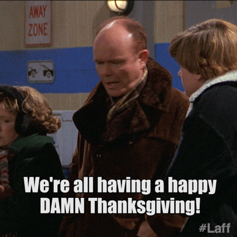
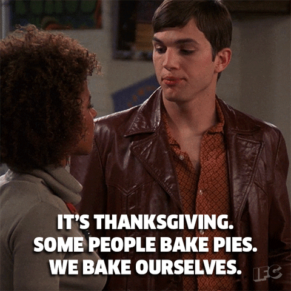
1. DK Metca$h 💰
(8-3, PF 1569, FAAB $22)
What to be thankful for? The Colts offensive line - man they open up some huge holes for JT.
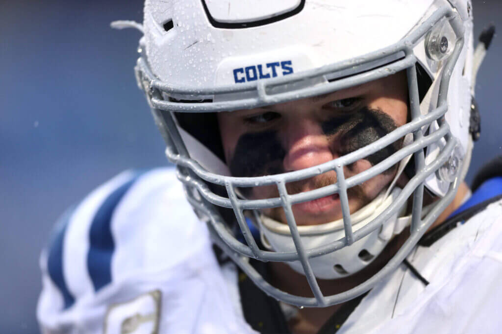
Remaining Opponents Seif (6-5) & Chris (4-7)
2. Ms. New Jeudy 🍑
(7-4, PF 1430, FAAB $25)
What to be thankful for? Having the day off to write these rankings, and my league xoxo lol. But for real, having the lowest points against.
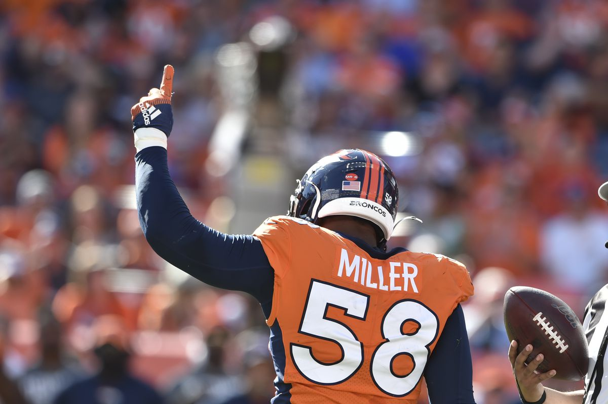
Remaining Opponents Kris (5-6) & Seif (6-5)
3. Kupp Half Empty 🥤
(7-4, PF 1421, FAAB $23)
What to be thankful for? Matt Stafford - pretty obvious on this one.
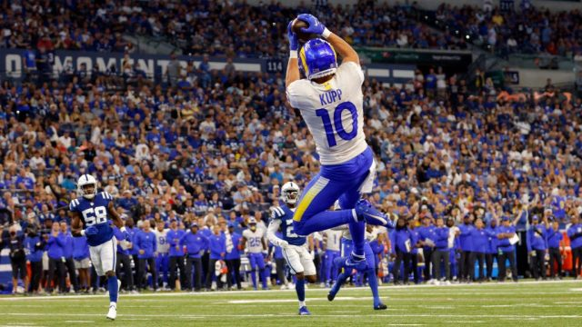
Remaining Opponents Neil (6-5) & Andy (3-8)
4. Take Mahomes Tonight 🎙
(6-5, PF 1323, FAAB $5)
What to be thankful for? The Philly offense has changed so much since Sanders went out, and they’ll actually give him touches now!
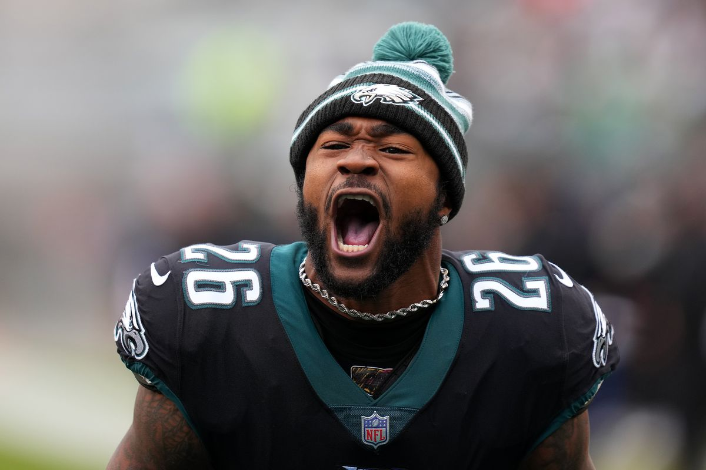
Remaining Opponents Andy (3-8) & Kris (5-6)
5. Kittles n’ Bits 🐶
(6-5, PF 1361, FAAB $74)
What to be thankful for? Not having glaring needs, and having a huge wad of cash for the postseason (notice I didn’t say playoffs?)
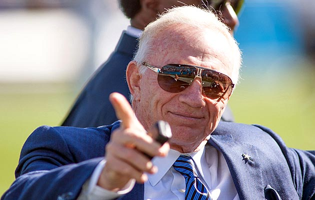
Remaining Opponents PJ (8-3) & Jake (7-4)
6. Unpaid Bills 🧾
(6-5, PF 1325, FAAB $1325)
What to be thankful for? The love of Jesus Devante Christ that saves. Oh, and having two bell cows for the last cows (for now).
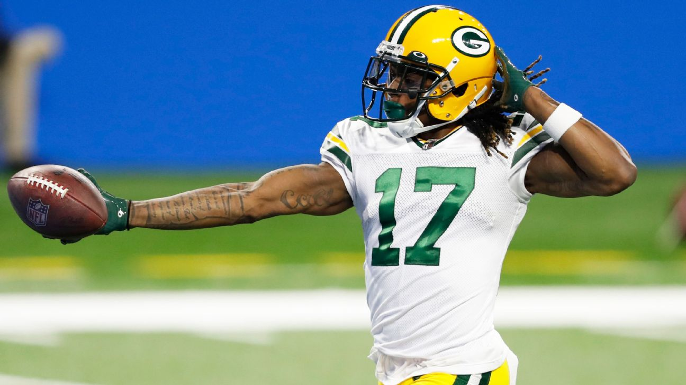
Remaining Opponents Tony (7-4) & Ian (3-8)
7. Russell’n up a Cook Out 👨🍳
(4-7, PF 1291, FAAB $25)
What to be thankful for? Having three running backs who aren’t Seahawks.
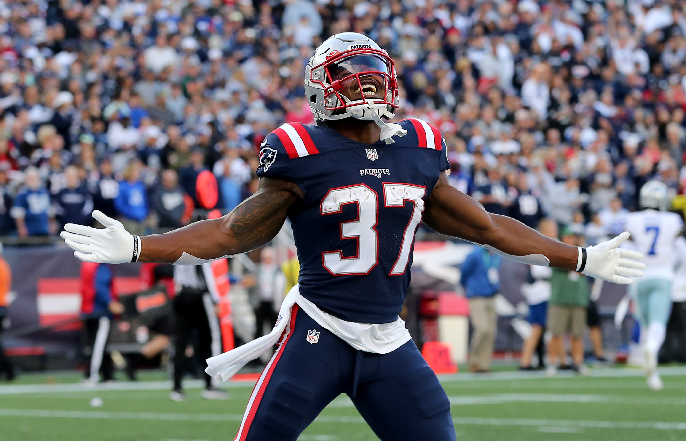
Remaining Opponents Ian (3-8) & PJ (8-3)
8. “Wishin on a Star” 🌟
(5-6, PF 1276, FAAB $30)
What to be thankful for? Cam Newton! It’s a fun story.
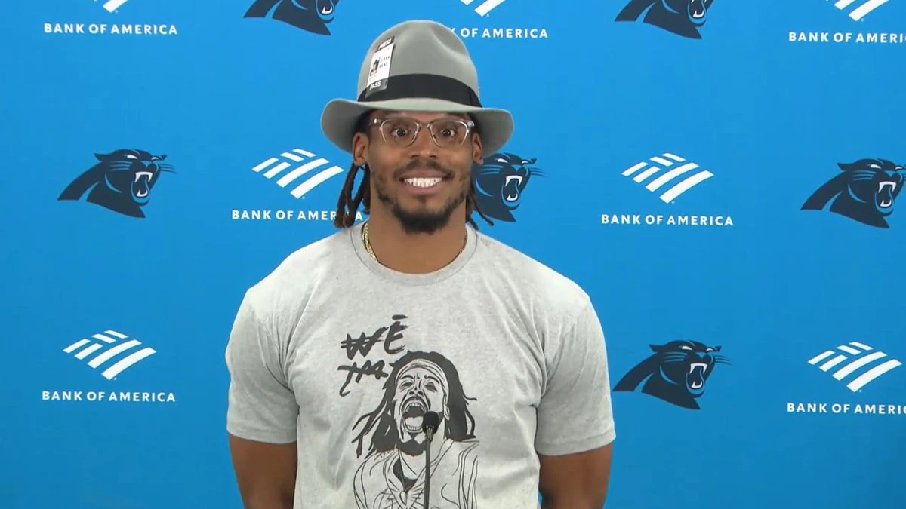
Remaining Opponents Jake (7-4) & Joel (6-5)
9. Mixon it up wit ya Mama 🤱
(3-8, PF 1319, FAAB $0)
What to be thankful for? The guy the team is named after - it’s truly been the year that fantasy managers had envisioned for years for Mixon.
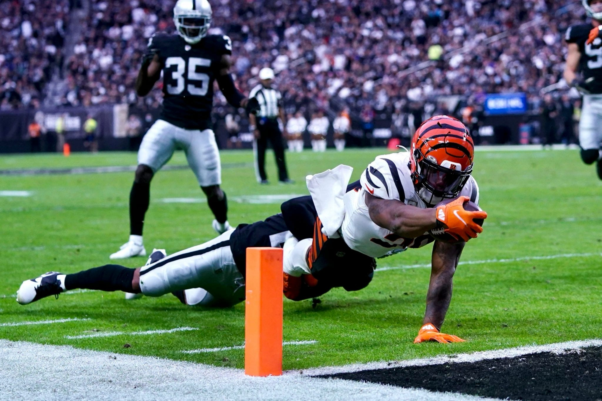
Remaining Opponents Joel (6-5) & Tony (7-4)
10. I Don’t Care 🚮
(3-8, PF 1243, FAAB $33)
What to be thankful for? There’s always next year!
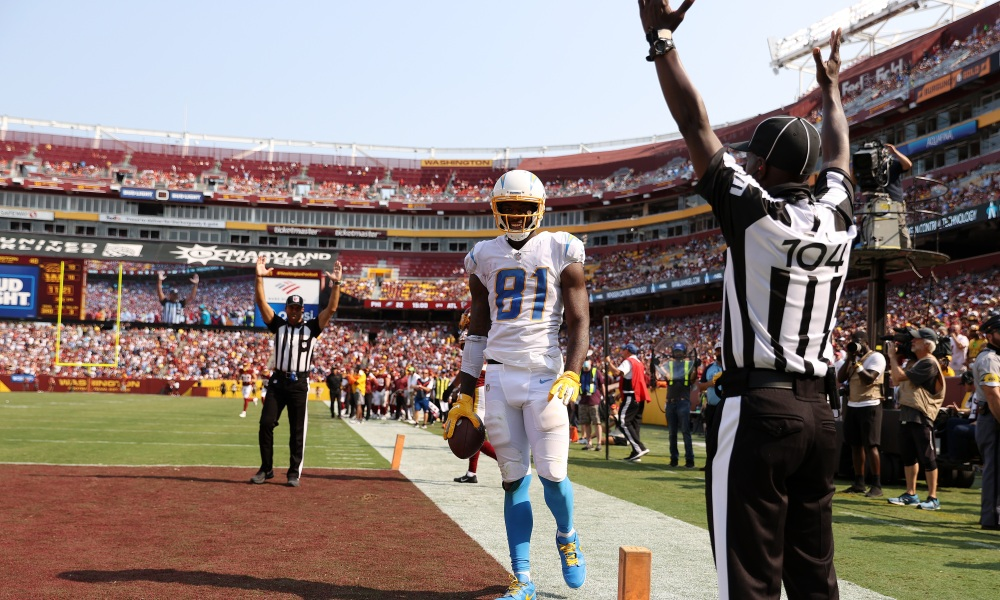
Remaining Opponents Chris (4-7) & Neil (6-5)